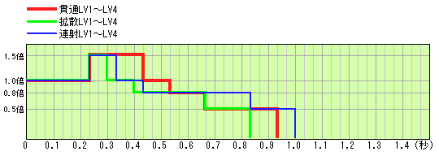

今作から追加された、弓の攻撃によるモンスターへのダメージについて示します。
| ● 武器倍率 | ||||||||||||||||||||||||||||
|
攻撃によるモンスターへのダメージ計算の元となるのは、ステータスに表示される攻撃力ではなく、 攻撃力を一定の倍率で割った 武器倍率 というものが元になります。 各武器の倍率は左表のとおりです。弓の場合はボウガンと同じで、1.2 で割った値となります。 食事効果やアイテム使用等による攻撃力アップは、全てこの武器倍率に一定値が加算されます。 従って、弓の場合はステータス上では 1.2倍のアップ量となります。 |
|||||||||||||||||||||||||||
| ● 矢の威力 | ||||||||||||||||||||||||||||
|
弓の矢は、連射、拡散、貫通と３種類のタイプがあり、それぞれがLV1〜LV4まであります。 連射： ピンポイントに1〜４本の矢を同時に放つ。連射レベルが高いほど矢の本数が増える 拡散： 放射状に複数の矢を放つ。拡散レベルが高いほど矢の本数が増える 貫通： 貫通する矢を放つ。貫通レベルが高いほどヒット数が増える 弓の種類によって、どのタイプ/レベルが使用できるかは決められています。 タイプごとの矢の威力は、左表のとおりです。 武器倍率に、矢の威力を％として乗算したものが基本威力となります。 （複数の矢が放たれるタイプは、それぞれの威力を列記） 矢に強撃ビンを装着すると、威力が 1.5倍になります。 |
|||||||||||||||||||||||||||
| ● 溜め段階による基本威力修正 | ||||||||||||||||||||||||||||
|
同じタイプ/レベルの矢でも、溜め段階によって基本威力が変化します。 左表は、溜め段階ごとの基本威力倍率です。 （溜め段階４は、装填数アップスキルが発動している場合のみ使用可能です） |
|||||||||||||||||||||||||||
| ● 時間経過による基本威力修正 | ||||||||||||||||||||||||||||
| 矢は、発射後の時間経過に伴って、下図のように威力が変化します。 | ||||||||||||||||||||||||||||
|  | ||||||||||||||||||||||||||||
| ● 会心率 | ||||||||||||||||||||||||||||
| 弓には会心率が設定されているものがあります。 会心率とは、クリティカルヒットが出る確率です。クリティカルヒットが出た場合、基本威力が 1.25倍になります。 心眼、見切り+1、見切り+2スキルがあると、会心率がそれぞれ 5％、10％、15％アップします。 会心率がマイナス値の場合、逆に威力が落ちる確率となります。 落ちた場合は、基本威力が 0.5倍になってしまいます。 |
||||||||||||||||||||||||||||
| ● 通常属性による追加ダメージ | ||||||||||||||||||||||||||||
|
通常属性（火/水/雷/龍/氷）付きの弓で攻撃すると、通常ダメージに加えて属性ダメージが追加されます。 ステータスに表示されている属性値は、実際の属性値を10倍しています。 したがって、属性ダメージ量は 表示属性値÷10×溜め倍率 となります。 溜め倍率は、左表で示すように溜め段階によって変化します。 |
|||||||||||||||||||||||||||
| ● 状態異常属性ビンの装着 | ||||||||||||||||||||||||||||
|
矢に状態異常属性 （毒・麻痺・睡眠） ビンを装着すると、状態異常属性が付加された矢を放つことができます。 （状態異常属性ビンを装着すると、弓に付加されている通常属性は無効となります） 属性値は、左表のとおりです。 複数の矢を放った場合は、１本ごとに属性値が付加されます。 状態異常攻撃強化 スキルが発動していると、属性値が 1.125倍になります。 また、溜め段階１の時のみ属性値が半分となります。 |
|||||||||||||||||||||||||||
| ● 弓の近接攻撃 | ||||||||||||||||||||||||||||
|
弓の近接攻撃は、攻撃の種類は切断攻撃属性となりますが、ランスと同様に打撃攻撃属性も持っており、 切断と打撃それぞれの肉質軽減によるダメージ計算の結果、よりダメージの大きい方が採用されます。 近接攻撃の威力は、左表のとおりです。武器倍率に威力値を％として乗算したものが基本威力となります。 弓に通常属性が付加されていれば、属性ダメージも追加されます。 属性ダメージは 表示属性値÷10×0.5 となります。 強撃ビンを装着すれば、近接攻撃の威力も 1.5倍となります。 状態異常属性ビンを装着した場合は、矢と同様、通常属性は無効となり、かわりに状態異常属性が付加されます。 近接攻撃の状態異常属性値はわずか 2 しかありませんが、他の近接武器と違って毎回発動します。 近接攻撃の場合は、各種ビン装着時でも矢のようにビンの数を消費することはありません。 |
|||||||||||||||||||||||||||
| ● 与えるダメージの増大 | ||||||||||||||||||||||||||||
|
モンスターが特定の状態の時に攻撃すると、左表のように与えるダメージが増大します。 これらの倍率は、基本威力に乗算されます。 ちなみに、今作では、麻痺状態中は常時ダメージが増大します。 シビレ罠にかかっている時は麻痺状態ではなくシビレ状態なので、増大はしません。 |
|||||||||||||||||||||||||||
| ● 肉質と全体防御率によるダメージ軽減 | ||||||||||||||||||||||||||||
| ここまでの計算結果が、モンスターに与えるべきダメージとなりますが、 モンスターには肉質というものが設定されており、ダメージを軽減してしまいます。 通常ダメージ、属性ダメージそれぞれが肉質によって軽減されます。 軽減率はモンスターの部位によって異なります。詳細は、モンスターデータの肉質の項を参照してください。 弓の矢は、ボウガンと同様、弾に対する肉質軽減が適用されます。 肉質で軽減された通常ダメージと属性ダメージの合計が、最終的にモンスターへ与える総ダメージ値となりますが、 モンスターには肉質とは別に全体の防御率が設定されています。 全体防御率は、シングルモードではほとんど100％（つまり軽減なし）ですが、ネットワークモード、さらには 上位クラスに行くほど軽減率が高くなり、総ダメージ値を軽減してしまいます。 モンスターが怒り状態になると、全体防御率がおよそ 1.2倍ほどにアップし、ますますダメージが軽減されます。 （アップする量はモンスターによって異なります） |
||||||||||||||||||||||||||||
| ● プレイヤーの攻撃力アップ | ||||||||||||||||||||||||||||
|
プレイヤーの攻撃力をアップする手段はいろいろありますが、大別して３つのグループに分けられます。 １：攻撃力アップのスキル発動、攻撃力をアップするアイテムの所持（力の護符・力の爪） ２：食事効果によるアップ、鬼人薬・鬼人薬グレートの使用 ３：怪力の種・怪力の丸薬・鬼人笛の使用 グループ１は、クエスト中に力尽きても効力が失われることはありません。 グループ２は、クエスト中はずっと有効ですが、力尽きると効力が失われます。 グループ３は、一定の時間が経過すると、効力が失われます。 それぞれの武器倍率アップ量は、左表のとおりです。 グループ２と３は、グループ内の各効果が重複することはありません。重複した場合は、順番にかかわらず 効果の大きいものが優先されます。 例えば、食事効果で武器倍率が５上昇した状態で鬼人薬を使用しても、武器倍率上昇量は５のままです。 しかし、食事効果で武器倍率が３上昇した状態で鬼人薬グレートを使用した場合は、上昇量が５になります。 |
|||||||||||||||||||||||||||